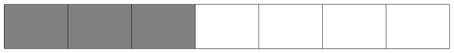
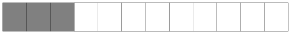
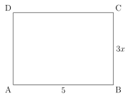

Automatismes
1. Semaine 3
1.1. Correspondance entre les nombres et les pourcentages.
Convertir en pourcentage les nombres suivants :
- \(0,3=\ldots\)
- \(0,04=\ldots\)
- \(1,5=\ldots\)
- \(4=\ldots\)
- \(0,99=\ldots\)
Compléter les égalités suivantes :
- \(90\% =\ldots\)
- \(100\% =\ldots\)
- \(40\% =\ldots\)
- \(2\% =\ldots\)
- \(0,1\% =\ldots\)
1.2. Fractions
Quelle est la proportion \(P\) grisée dans la figure ci-dessous ? Donnez votre résultat sous la forme d'une fraction irréductible.

\[ P = \]
Même question avec la figure ci-dessous :

\[ P = \]
1.3. Calculs avec les fractions
Calculer le nombre suivant, sur votre ardoise. Vous donnerez le résultat sous la forme d'une fraction irréductible.
\begin{align*} A &= \frac{2}{6} + \frac{8}{9} \\ A &= \ldots \end{align*}1.4. Proportion
Calculer mentalement \(25\%\), \(50\%\), et \(5\%\) de \(250\) €.
1.5. Décimaux
Calculer les valeurs suivantes :
- \(1-0,33=\ldots\)
- \(0,4 \times 0,6 =\ldots\)
- \(\frac{20}{100} \times \frac{30}{100}=\ldots\)
2. Semaine 3 - deuxième partie
Pour chaque question, vous travaillerez sur votre cahier, et vous indiquez vos réponses trouvées sur votre ardoise.
2.1. Correspondance entre les taux et les coefficients multiplicateurs (hausse)
Pour chaque taux, donnez le coefficient multiplicateur de la hausse associée.
- \(+30\%\)
- \(+40\%\)
- \(+100\%\)
- \(+300\%\)
- \(+0,1\%\)
2.2. Phrase à compléter
Compléter la phrase suivante :
Diviser par \(\ldots\) revient à \(\ldots\).
2.3. Résoudre des équations linéaires
Résoudre chaque équation, en donnant la valeur exacte sous la forme de fraction irréductible.
- \(7x - 2 = 0\)
- \(7x - 2 = 3\)
- \(7x + 2 = 3\)
- \(2 = 3 + 7x\)
- \(5x+2 = 3 + 7x\)
- \(\dfrac{5}{6} x = 2\)
2.4. Simplifier une expression
Simplifier chaque expression ci-dessous.
- \(A(x) = 5(x - 3)\)
- \(B(x) = (x - 1)(x + 2)\)
- \(C(x) = 7x^2 + 4x - 3 + 2x + 2 - x^2\)
3. Semaine 4
- \(0,8 \times 0,9\)
- \(\frac{3}{5} - 1\)
- \(30\%\) de \(70\) euros.
- Je dois payer \(3,5\) € à la boulangerie. Combien de pièces de \(50\) centimes ai-je besoin ?
- \(30^2\)
- Je multiplie par deux mon âge. Je retire dix ans au résultat. J'obtiens \(46\). Quel est mon âge ?
- Baisse de \(30\%\) de \(30\) euros.
- Que mettre à la place du « ? » : \(3 \; ? \; 4 = 0,75\)
- \(2,13 - 0,73\)
- Donner l'écriture décimale de \(3 + \frac{3}{10} + \frac{33}{100}\)
4. Semaine 6
4.1. Énoncé
Calculatrice autorisée
- Dans un triangle rectangle de cotés \(a=8\) cm et \(b=4\) cm où \(a\) est l'hypoténuse du triangle, quelle est la longueur arrondie au dixième du troisième coté \(c\) ?
- Ma facture était de \(184\) €, elle est maintenant à \(200\) € euros. De combien a-t-elle augmenté au pourcent près ?
- Remplacer le \(?\) par le bon nombre : \(184 \times \, ? \, = 200\)
- Qui est le plus grand nombre entre \(0,3^2\) et \(0,5^2\) ?
- Qui est le plus grand nombre entre \(0,3\) et \(0,3^2\) ?
4.2. Solution
- Dans un triangle rectangle de coté \(a=8\) et \(b=4\) sanchant que \(a\) est l'hypoténuse, quelle est la longueur arrondie au dixième du troisième coté \(c\) ? \pause \(\boxed{c=6,9}\)
- Ma facture était de \(184\) euros, elle est maintenant à \(200\) euros. De combien a-t-elle augmenté au pourcent près ? \pause \(\boxed{8\%}\)
- Remplacer le \(?\) par le bon nombre : \(184 \times \, ? \, = 200\) \pause \(\boxed{? \,=1,08}\)
- Qui est le plus grand nombre entre \(0,3^2\) et \(0,5^2\) ? \pause \(\boxed{0,5^2=0,25}\)
- Qui est le plus grand nombre entre \(0,3\) et \(0,3^2\) ? \pause \(\boxed{0,3 > 0,3^2}\)
5. Semaine 6 – deuxième partie
5.1. Énoncé
Pour quelle valeur de \(x\) le rectangle \(ABCD\) a un périmètre de \(17,2\) ?

5.2. Correction
5.2.1. Figure
5.2.2. Solution
On résout l'équation : \[ 2(3x + 5) = 17,2 \] Or \(2(3x + 5) = 6x + 10\)
On résout ainsi :
\begin{align*} 6x + 10 &= 17,2 \\ 6x &= 7,2 \\ x &= \frac{7,2}{6} = 1,2 \\ \end{align*}Finalement \(\boxed{x = 1,2}\).